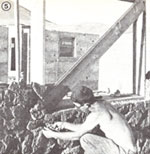

After spending eight years in our $2,000, self-built stone house in southern Idaho, Sharon and I sometimes wonder whether-were we somehow forced to start construction all over again-we would still build our home with natural stone. After all, the owner-builder can now select from many intriguing lowcost shelter possibilities . . . including log, cordwood, woodframe, pole, adobe, and earth-sheltered homes ... plus yurts, domes, tipis, houseboats, and an endless variety of innovative salvage-material structures.
Of course, it would be absurd to suggest that any building material or type of structure is "best" for all people under every circumstance, and certainly each one has its own outstanding advantages. Still, we can't help concluding that an owner-built home constructed using "plain old rocks" has more to recommend it-for more people in more building situations-than does a homemade dwelling built with any other material. Here's why:
REASON NUMBER ONE
Good building stone can be found moat anywhere, usually free for the gathering. We built our 1,100-square-foot home with 18 pickup loads of free boulders . . . most of which were gathered from a single field about a mile from our construction site. The rancher who owned the land was delighted to have his field cleared of "all them blankety-blank, machinerybustin' rocks". Similar rancher/farmer/ landowner situations exist all over the country.
Collecting stones-for free-from public lands is also a possibility. However, since "rock foraging" isn't currently a common practice, regulations governing such activity are usually vague or nonexistent . . . so be sure to inquire locally before gathering- Some commercial rock quarries, too, will allow you to handpick inexpensive stones from their huge rubble piles . . . or will even haul the material to your site for a reasonable price!
Of course, the best source of building stone could be your own property . . . if you're lucky (or smart) enough to own a piece of "worthless", rocky ground.
Besides the stone itself, you'll need only cement, sand, and gravel . . . plus maybe some steel reinforcement for corners and lintels. Our own home's 8' X 28' X 45' walls went up for only $250 in 1973, and-though cement and rebar prices have increased substantially since then-it's still possible to put up some really super stone walls for very little money.
REASON NUMBER TWO
Contrary to common belief, it's quite easy to build with stone. By using any of several modern stonework forming methods, you simply don't need the years of experience that were required before an old-fashioned, freehand stonemason could claim mastery of his or her art. You'll find the best of these systems described in the excellent manual, The Owner-Builder's Guide to Stone Masonry by Ken Kern, Steve Magers, and Lou Penfield ($11.95) . . . a volume which we recommend that you read before so much as picking up your first rock. [EDITOR'S NOTE: Other books of interest to amateur stonemasons are The Forgotten Art of Building a Stone Wall by Curtis P. Fields (93.95), and Build Your Own Stone House Using the Easy Slipformed Method by Karl and Sue Schwenke ($5.95). All of the books mentioned above are available at the noted prices-plus 95 cents shipping and handling for one or two books ($2.00 on orders of three or more)-from Mother's Bookshelf, P. O. Box 70, Hendersonville, North Carolina 28791.
As to the common complaint that stone is unbearably heavy to work with, we can only answer by noting that all the rocks used in our 10-inch-thick walls were about football size . . . and weighed no more than the timbers commonly em ployed in wood-frame construction. (If necessary or preferred you could build much thicker walls . . . using denser and heavier stones.)
Finally, a stone house doesn't take long to build. Our walls went up in just eight weeks, and we moved in a short five months after beginning construction . . . with 100% of the work having been done by Sharon and me, and our two girls (who were then 9 and 11 years old).
REASON NUMBER THREE
Stone is durable, fireproof, bug- and verminproof, and rot-free. While some log or wood-frame buildings tend to crumble into ruin and decay after 50 years or so, well-built stone structures will often stand for centuries. (Of course, you won't live in your stone house that long, but your great-grandchildren might still be there . . . which would certainly help save precious building materials for others. )
You're not likely to lose a stone house to fire either . . . but, even if the structure's woodframe interior were somehow gutted by flames, you could probably rebuild from the original stone shell.
And-while other homeowners may lose time, money, and sleep fighting termites, rodents, and wet or dry rot-you can sit behind your near-impenetrable stone walls and relax . . . even decades after your neighbors have lost their battles with the relentless gnawers, borers, and decomposers that attack wooden dwellings.
REASON NUMBER FOUR
Stone is attractive and maintenance-free. Natural stone comes in so many shapes, sizes, colors, and textures that the final appearance of a rock house is limited only by the builder's imagination, daring, and methodical effort. While our house was constructed rather simply to save time, money, and labor . . . we've seen veritable castles of colorful stonework all over the country.
Another great advantage of "rock living" is that-once your stone house is complete-you can totally forget further maintenance: There'll be no need to repaint, no expensive siding to install, no weather-warped boards to repair, no woodpecker holes . . . just the same beautiful, colorful stone year after year.
REASON NUMBER FIVE
Stone can be a superior insulator. With the ongoing energy crunch, a lot of folk might object to dense stone because it's not considered a good insulative material. But-at least in moderate climates-rock walls will actually help keep you comfortable . . . as they slowly heat during the day, then radiate warmth through much of a cool evening. The nightchilled walls will also cool the structure's interior well into the following day.
In extreme heat or cold, of course, it pays to have some form of additional insulation, but such weatherproofing would be needed in a house built of most any other wall material, as well. And, if you carefully seal all cracks around doors and windows, you can bet no wayward draft will penetrate that foot-thick mass of stone and concrete!
REASON NUMBER SIX
Stone is conventionally acceptable...While there are relatively few stone houses around, their long and successful history assures them a general respectability, which-unfortunately-is not as readily given to more offbeat forms of shelter. We'd be among the last folks to advocate being conventional in your selection of a home just to avoid a little bigoted criticism, but there are some definite personal, practical, and economic benefits to social acceptance . . . including the ease with which you're likely to get local code clearance to build your house in the first place!
REASON NUMBER SEVEN
Stone houses can have enormous resale value. While you laboriously turn that pile of rocks into a very personal dwelling, you may have no intention of ever parting with it. However, one's goals and life circumstances have a way of changing, and-if you do decide to sell-you could well be offered a small fortune for your stone retreat.
As we said earlier, rock houses are comparatively rare (this scarcity is, in itself, a valuable market commodity , and a well-built stone structure is truly beautiful and durable. So-despite the fact that such homes can be built for next to nothing (as house prices go nowadays-a rock dwelling would likely bring top dollar on the market!
IN CONCLUSION . . .
Would we build with stone again again? in" Well I given all the above advantages, the same hilltop building site, and finances corn parable to what we had eight years ado (very low) . . . we'd have to answer with a definite yes! Sure, we'd change a few things. For instance, we'd build the house into the south slope so it would be out of the north wind and low enough to have a gravity-flow water system . . . we'd probably incorporate some of the solar-heating technology that's been developed in recent years . . . and we'd approach several minor technical details differently. But overall, our certain (and enthusias tic) choice would still be natural stone If building with this free-for-the-taking material makes sense to you, too . . . suggest you watch your step on that next country walk. You may literally stumble over part of your own future home.
|
|
|
|
|
 |
|
|